Le shader, c’est un programme, un morceau de code qui décrit généralement une matière. Au-delà du rendu d’un simple « matériau », c’est même une étape qui va permettre de représenter de la 3D sur nos écrans 2D.
Flopine
Bien qu’à ATI beaucoup d’entre nous soyons habitués à manipuler les fragment shaders avec les nodes1, ceux-ci sont en réalité des programmes écrits pour s’exécuter sur la carte graphique. Les fragment shaders, également connus sous le nom de pixel shaders, sont responsables de la production d’une couleur unique pour chaque fragment2 rendu. Dans la plupart des cas, un fragment correspond à un pixel affiché à l’écran. La couleur du pixel est stockée dans des canaux séparés. Si on considère le codage de couleurs RGBA, un premier canal représentera le rouge, et les trois autres canaux décriront respectivement le vert, le bleu et l’opacité. Chaque canal est représenté par des valeurs variant de \(0.0\) à \(1.0\). Par exemple, \((0.0, 0.0, 0.0, 1.0)\) représentera le noir opaque, \((1.0, 1.0, 1.0, 1.0)\) représentera le blanc opaque et \((1.0, 0.0, 0.0, 0.5)\) représentera le rouge pur avec \(50\%\) d’opacité.
Pour récapituler, un fragment shader est un programme contenant une seule fonction. Cette fonction reçoit les coordonnées uv d’un quad représentant l’intégralité de l’écran en tant que paramètre d’entrée. Elle calcule ensuite la couleur de rendu pour chaque pixel.
Dans la pratique du livecoding, il est essentiel de pouvoir coder « de mémoire », car en compétition, selon les règles en vigueur, il peut être interdit de consulter Internet en cas d’oubli, tout comme l’utilisation de textures peut être proscrite.
Dans cette section, nous nous efforcerons de décrire les principales techniques de développement en live d’un shader tout en abordant les concepts mathématiques sous-jacents. Ces principes mathématiques sont indispensables pour comprendre la logique à laquelle obéissent nos shaders. Sans cela, nous perdrons une liberté créative ainsi que la capacité de débogage. Il n’est pas rare de se retrouver sur scène devant un écran totalement noir sans parvenir à trouver la source de l’anomalie. De plus, contrairement au développement sur CPU, les fonctions d’affichage telles que en langage C ne sont pas disponibles lors de la programmation pour la carte graphique.
Il existe plusieurs langages pour écrire un shader : GLSL, HLSL, Cg ou encore MSL. Le choix du langage dépend de facteurs tels que la performance recherchée, la compatibilité avec la plate-forme ou les logiciels choisis pour le projet.
Cependant, le point commun entre tous ces langages est qu’ils possèdent une syntaxe héritée du langage C. On y retrouve le concept de types, de déclarations de fonctions, de structures, etc. Une fois que l’on maîtrise la syntaxe de l’un de ces langages, il est très aisé de passer d’un langage à un autre ; il suffit simplement de s’adapter à quelques subtilités. Par exemple, le type qui décrit les vecteurs à trois dimensions peut être dans un langage et dans un autre. De même, les nombres flottants () peuvent nécessiter un point () ou la lettre en suffixe ().
L’espace uv est un concept fondamental pour comprendre les shaders, et tous les artistes en sont déjà au moins familiers, sans avoir nécessairement besoin de comprendre les mathématiques qui se cachent derrière, notamment lorsqu’ils appliquent des textures à la surface de leurs modèles 3D.
Les textures apparaissent généralement en deux dimensions (bien qu’il existe également des textures 1D et 3D) et sont décrites par une image. Elles peuvent aussi bien concerner l’aspect visuel de « l’apparence » de l’objet avec la diffuse map3 que l’illusion de relief avec la normal map4. Le terme anglais map correspond au terme français cartographie. Cette terminologie provient probablement de l’analogie avec la cartographie géographique, où des informations sont représentées sur une carte en deux dimensions pour refléter des éléments de la réalité en trois dimensions.
Les textures existent dans un espace en deux dimensions, et à chaque sommet, on associe une coordonnée uv comprise entre \(0\) et \(1\), qui désigne un texel5 de la texture. Tout comme n’importe quel attribut associé à un sommet, ces valeurs de coordonnée de texture seront interpolées lors de la rastérisation.
Dans le contexte du livecoding, nous ne disposons pas d’un modèle 3D complet, mais seulement de deux triangles formant un plan qui remplit tout l’écran. Les données d’entrée du shader nous fournissent par défaut la résolution du viewport () ainsi que les coordonnées de chaque pixel (). En divisant ces coordonnées par la résolution, nous obtenons une valeur normalisée, comprise entre \(0\) et \(1\), correspondant à nos coordonnées de texture.
void mainImage( out vec4 fragColor, in vec2 fragCoord )
{
vec2 uv = fragCoord / iResolution.xy;
fragColor = vec4(uv,0.,1.0);
}Dans l’image [meduse_00], nous avons une représentation visuelle de l’espace uv. Les coordonnées horizontales sont codées dans la couleur rouge tandis que les coordonnées verticales sont codées dans la couleur verte. L’origine du repère étant située en bas à gauche, nous observons du noir. Le point en bas à droite est d’un rouge pur car sa coordonnée en \(X\) vaut \(1\) et sa coordonnée en \(Y\) vaut \(0\). À l’inverse, la couleur en haut à gauche du canvas est d’un vert pur. En haut à droite, nous obtenons un jaune pur car les coordonnées \(X\) et \(Y\) valent toutes les deux \(1\). Tous les pixels intermédiaires possèdent une couleur interpolée dépendante de leur distance par rapport à chacun des quatre coins. Cela est effectué automatiquement lors de l’étape de rastérisation.


Pour une meilleure visualisation, nous pouvons observer séparément les coordonnées en abscisse (voir [meduse_uv_00]) et en ordonnée (voir 1.3).
Cet espace uv, ou coordonnées uv, désigne l’espace dans lequel nos shaders vont dessiner. Cette notion est cruciale car nous n’appliquons pas les transformations à la forme dessinée elle-même, mais plutôt à l’espace dans lequel cette forme est dessinée (voir 1.4).
 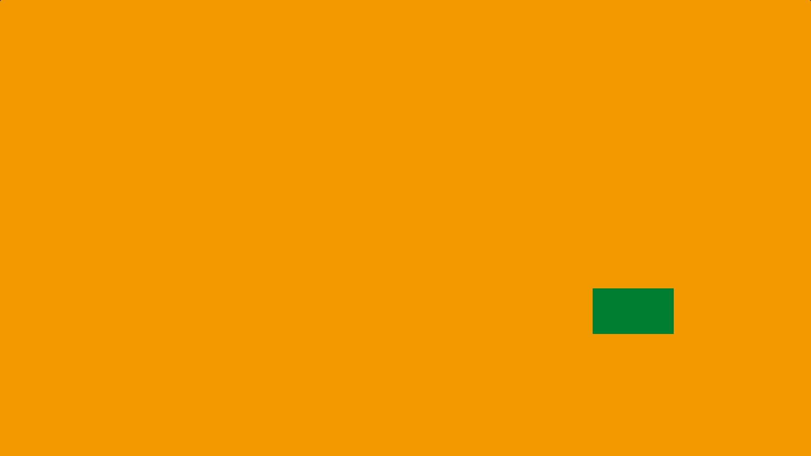
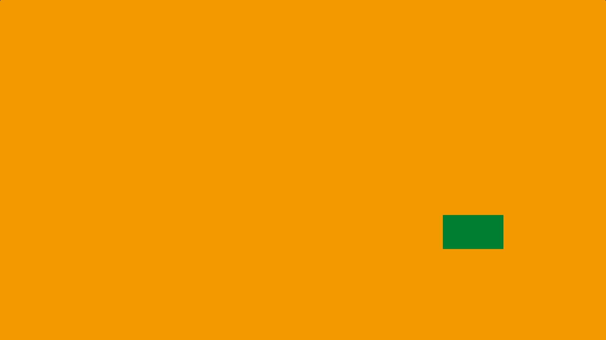
Il est souvent préférable d’utiliser un espace centré et orthonormé6 pour faciliter le dessin. Ainsi, le code d’un shader commencera souvent de la même manière :
void mainImage( out vec4 fragColor, in vec2 fragCoord )
{
vec2 uv = (fragCoord-.5*iResolution.xy)/iResolution.xx; // permet de centrer nos coordonnees
}L’espace résultant (voir 1.2) trouve son origine au centre, et les coordonnées varient entre \(-0.5\) et \(+0.5\). Comme précédemment, la couleur noire représente des valeurs négatives ou nulles. Le vert indique des valeurs négatives en X et positives en Y, le rouge indique des valeurs positives en X et négatives en Y, et enfin le jaune indique des valeurs positives sur les deux axes. Avec une pratique régulière, ces associations de couleurs deviennent presque instinctives, et l’association entre les couleurs et les axes ne demande plus d’efforts de réflexion.
Le deuxième concept essentiel à assimiler est le principe mathématique d’une fonction de distance signée. Cette fonction est souvent désignée par l’appellation anglaise signed distance function, abrégée en SDF, que l’on retrouve couramment sur Internet et dans la littérature. Ce sont elles qui vont nous permettre de décrire les objets de notre scène mais aussi de les déformer, de les répéter, etc.
Schématiquement, une SDF est une fonction qui calcule une valeur représentant la distance d’un point par rapport à une surface donnée. Le signe de la valeur retournée nous indique si le point est situé à l’intérieur ou à l’extérieur de la surface. Ce qui suit est une explication équivalente, mais formulée en termes mathématiques.
Soit \(S\) la surface de référence, et \(p\) un point dans l’espace. La fonction de distance signée \(d(p,S)\) évalue la distance du point \(p\) à la surface \(S\), avec les propriétés suivantes :
Si le point \(p\) est à l’extérieur de la surface \(S\), la distance est positive (\(>0\)).
Si le point \(p\) est à l’intérieur de la surface \(S\), la distance est négative (\(<0\)).
Si le point \(p\) est sur la surface S, la distance est nulle (\(=0\)).
Notons que dans un souci de simplification visuelle, nous nous focaliserons sur les SDF en deux dimensions. Cependant, il est important de noter que les mêmes principes s’appliquent également dans un espace tridimensionnel. Dans les images ci-dessous (voir [sdf_00], 1.5, [sdf_02] et 1.6), nous visualisons quatre SDF, chacune représentant une forme différente (un cercle, une étoile, un cœur et une vague sinusoïdale). Ces fonctions, créées par Inigo Quilez, sont largement utilisées dans la création de shaders. De nombreuses formes ont été codées et, comme nous le verrons un peu plus tard, il est très facile de les combiner entre elles.


Sur les images, la couleur orangée représente l’espace qui se trouve à l’extérieur de la forme, tandis que la couleur bleutée représente l’espace à l’intérieur de la forme. Dans les deux cas, plus l’on se rapproche de la surface de la forme, plus la couleur s’assombrit. Ceci est logique puisque plus l’on se rapproche de la surface, plus la valeur de la distance tend vers zéro. Le contour blanc est là pour indiquer que l’on se trouve exactement sur la surface de la forme. Les ondulations que l’on observe autour de la forme symbolisent la distance proprement dite. Une analogie que j’aime employer est celle avec le sonar 7 utilisé par les sous-marins pour détecter des objets sous l’eau. Grâce à cette fonction de distance, l’utilisateur peut contrôler à la fois la taille de la forme et l’épaisseur de son contour.
Nous venons de voir comment dessiner des formes 2D primitives telles que des cercles, des étoiles et des carrés, mais nous pouvons utiliser les opérations SDF 2D pour créer des formes plus complexes en combinant des formes primitives.
Les SDF possèdent une propriété mathématique très intéressante : il est très commode d’utiliser des opérations booléennes pour combiner les formes entre elles. Les trois opérateurs booléens sont l’union, l’intersection et la soustraction. L’union permet d’assembler deux objets, l’intersection est le résultat de la partie commune entre les deux objets, et la soustraction est le résultat du premier objet auquel on enlève le second objet. Les illustrations qui suivent considèrent deux objets: un carré et un cercle. En code, ces opérations booléennes sont triviales à traduire.
Pour l’union, on utilise la fonction avec les deux SDF en tant qu’arguments (voir [sdf_op_00]).
void mainImage( out vec4 fragColor, in vec2 fragCoord )
{
float d1 = sdCircle(uv, 0.1, vec2(0., 0.)); // le cercle
float d2 = sdSquare(uv, 0.1, vec2(0.1, 0)); // le carre
float res; // result
res = min(d1, d2); // union
}
Pour l’intersection on utilise (voir 1.7).
void mainImage( out vec4 fragColor, in vec2 fragCoord )
{
res = max(d1, d2); // intersection
}Pour la soustraction, on utilise toujours la fonction , mais avec l’inverse de la seconde forme comme deuxième argument (qu’on décrit avec l’opérateur ). En effet, la soustraction est une intersection entre la première forme et la « non » seconde forme (voir [sdf_op_02]).
void mainImage( out vec4 fragColor, in vec2 fragCoord )
{
(...)
res = max(d1, -d2); // soustraction
}Pour l’opérateur on utilise une combinaison de et (voir 1.8).
void mainImage( out vec4 fragColor, in vec2 fragCoord )
{
(...)
res = max(min(d1, d2), -max(d1, d2)); // xor
}

Tous ces opérateurs booléens ont été réécrits par Inigo Quilez pour prendre en compte un paramètre de lissage8 (voir [sdf_op_04] et 1.9).
void mainImage( out vec4 fragColor, in vec2 fragCoord )
{
// smooth min
float smin(float a, float b, float k) {
float h = clamp(0.5+0.5*(b-a)/k, 0.0, 1.0);
return mix(b, a, h) - k*h*(1.0-h);
}
// smooth max
float smax(float a, float b, float k) {
return -smin(-a, -b, k);
}
}Inigo Quilez a également développé des fonctions pour agir directement sur l’espace uv, permettant de dessiner rapidement tout en améliorant les performances. Par exemple, si l’on souhaite créer une scène symétrique, il peut être utile d’utiliser la fonction . Cette fonction crée une forme 2D dupliquée le long de l’axe \(X\) à l’aide du SDF utilisé (voir [sdf_op_06]). De même, si nous voulons dessiner un nombre infini d’objets 2D sur un ou plusieurs axes, la fonction est parfaitement adaptée (voir 1.10).

Pour des raisons de lisibilité, nous avons traité la notion des SDF dans un espace bidimensionnel. Bien évidemment, tous ces concepts fonctionnent de la même manière dans un espace tridimensionnel. Il existe des fonctions pour décrire des formes 3D primitives comme des cubes ou des sphères, mais aussi des formes plus complexes comme des pyramides ou des tores. Les opérations booléennes demeurent inchangées (voir [union], [intersection], 1.11), et en les combinant, nous pouvons obtenir facilement des formes évoluées (voir [sdf00] et 1.12).


Après avoir expliqué en détail ce qu’est une SDF et comment elle est utilisée dans le domaine du creative coding, il me paraissait pertinent d’approfondir la compréhension en examinant la fabrication mathématique de ces fonctions. Bien que de nombreux créateurs de shaders se contentent souvent d’adopter une SDF préexistante développée par des figures reconnues comme Inigo Quilez, il est regrettable de constater que cela se fait souvent au détriment d’une réelle compréhension de la démonstration mathématique. Pourtant, cette démarche ouvre la voie à une appropriation intelligente des formes existantes et, surtout, à la création de SDF personnalisées.
Nous étudierons deux exemples illustrant la construction mathématique d’une SDF. Le premier exemple consistera en une exploration de l’espace bidimensionnel à travers la représentation d’un simple carré. Dans le second exemple, nous nous pencherons sur la création d’un tore (torus en anglais), en partant cette fois-ci d’un espace tridimensionnel. En comprenant la logique et les principes mathématiques derrière la création de ces SDF, nous serons en mesure non seulement d’adapter efficacement les formes déjà existantes, mais également de développer nos propres fonctions SDF, ouvrant ainsi de nouvelles possibilités créatives.
Nous commençons par examiner un carré en 2D centré à l’origine. Pour simplifier le calcul et tirer parti de la symétrie, nous nous concentrons initialement sur un seul quadrant9 de la forme. Calculer la distance d’un point situé en dessous du troisième quadrant, équivaut à calculer la distance du point symétrique par rapport à l’origine, qui se trouverait au-dessus du troisième quadrant (voir [box00]). Nous définissons \(R_x\) et \(R_y\) comme étant respectivement la largeur et la hauteur du premier quadrant.
En se référant au premier quadrant, nous pouvons distinguer les différents cas qui se présentent. En généralisant la solution à l’aide de la fonction , nous prenons en compte la symétrie. L’espace peut être divisé en trois parties distinctes : une partie juste au-dessus du quadrant, une partie juste à droite du quadrant et une troisième partie « en haut à droite » du quadrant (voir [box01]).

 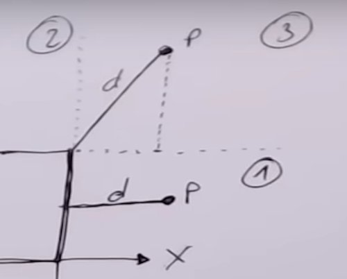
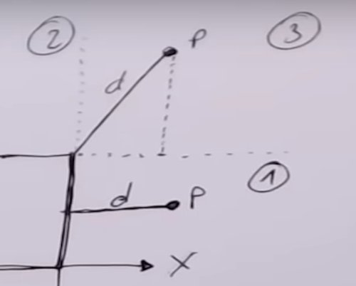
Dans la première zone, le calcul est relativement simple : il s’agit de la distance de la composante \(x\) du point par rapport au côté droit du carré, ce qui se traduit par \(d = P_x - R_x\). Pour la deuxième zone, la logique est similaire, mais appliquée verticalement, conduisant à \(d = P_y - R_y\). Cependant, pour la troisième zone, nous devons faire appel au théorème de Pythagore10 pour calculer la distance entre le point et le coin supérieur droit du quadrant (voir 1.13). Ainsi, nous obtenons:
\[\begin{aligned} d = \sqrt{(P_x-R_x)^2 + (P_y-R_y)^2} \end{aligned}\]
Notre objectif est de combiner ces trois expressions mathématiques pour exprimer la distance \(d\) en une seule. Nous remarquons que les deux premières expressions apparaissent dans la troisième. En gardant uniquement la troisième expression, nous aimerions que la composante \(y\) s’annule si nous sommes dans la première zone, et que la composante \(x\) s’annule si nous sommes dans la deuxième zone. Nous remarquons que dans chaque cas, la composante que nous aimerions annuler est négative. En utilisant la fonction , nous pouvons distinguer chaque cas. Finalement, nous concluons que:
\[\begin{aligned} d = \sqrt{max(P_x-R_x,0)^2 + max(P_y-R_y,0)^2} \end{aligned}\] Avec la notation vectorielle, nous pouvons simplifier l’écriture en écrivant: \[\begin{aligned} d = length(max(abs(P)-R, 0)) \end{aligned}\]
Une traduction en code GLSL donnerait alors:
// p: position du point, s: size du carre
float box(vec2 p, vec2 s)
{
float d;
p = abs(p);
vec2 m = max(p-s, vec2(0.));
return length(m);
}Pour le tore (torus en anglais), nous aborderons les détails mathématiques de manière concise, mais la méthode de raisonnement reste la même que celle exposée précédemment. Si nous imaginons le tore positionné à l’origine, nous pouvons le décrire à l’aide de deux cercles ou de deux rayons d’un cercle. Tout d’abord, il y a le cercle plus grand situé dans le plan \(XZ\) (le plan horizontal), puis il y a un cercle plus petit qui tourne autour de ce premier cercle (voir 1.14).
Lorsque nous cherchons à déterminer la distance qui sépare un point \(P\) situé au-dessus du plan \(XZ\) à la surface de ce tore, nous devons d’abord calculer la distance \(d\) résultant des composantes \(x\) et \(y\) du vecteur \(\vec{PC}\) (cela revient à calculer la norme du vecteur \(\vec{PC}\)). L’image projetée de \(P\) sur le plan \(XZ\) nous fournit la valeur de \(x\). Nous pouvons l’obtenir en soustrayant le rayon du cercle plus grand de la distance totale de \(P\) à l’origine. La valeur \(y\) correspond simplement à la position verticale de \(P\).
// p: position du point, r: rayon du grand et du petit cercle
float torus(vec3 p, vec2 r)
{
float x = length(p.xz)-r.x;
return length(vec2(x,p.y)-r.y;
}Avec ces valeurs de \(x\) et \(y\), nous pouvons former un vecteur. Sa longueur correspond à la distance \(d\). En soustrayant le rayon du cercle plus petit de cette longueur, nous obtenons la distance finale à la surface du tore. En combinant cette fonction de distance signée avec la méthode permettant de passer aux coordonnées polaires (que nous verrons par la suite), nous pouvons obtenir des représentations intéressantes où les repères uv tournent autour de la forme sur les deux axes (voir [tore03] et 1.15).
Au début de mon apprentissage des shaders, je parvenais à décortiquer le fonctionnement de certains shaders 2D mais je me sentais incapable de comprendre la « magie » qui se cachait derrière les shaders 3D. Or une grande proportion des shaders 3D visibles sur Shadertoy sont basés sur l’algorithme du ray marching. Il est donc indispensable de décomposer la logique qui se cache derrière avant d’aborder les techniques plus avancées qui en découlent.
Bien que d’autres algorithmes plus chers en calculs comme le ray tracing ou le path tracing permettent de représenter une scène 3D sur un écran 2D nous nous intéresserons surtout ici au ray marching qui est très populaire dans le monde de la demoscene. Le ray marching est utilisé pour dessiner des scènes 3D sur un écran 2D à l’aide de rayons.
Dans notre monde réel, les sources de lumière telles que le soleil projettent des rayons lumineux sous forme de photons dans des millions de directions différentes. Lorsqu’un photon touche un objet, l’énergie est absorbée par le réseau cristallin d’atomes de l’objet et un autre photon est libéré. En fonction de la structure cristalline du réseau atomique du matériau, les photons peuvent être émis dans une direction aléatoire (réflection diffuse) ou sous le même angle avec lequel ils ont pénétré le matériau (réflection spéculaire ou miroir).
Avec un ordinateur, si nous essayons de modéliser une scène en 3D en simulant les rayons d’une source de lumière et en dessinant les objets visibles depuis le point de vue de la caméra, nous gaspillons des ressources informatiques. En effet, cette simulation « vers l’avant » fait en sorte qu’un grand nombre de ces rayons n’atteignent jamais la caméra. Le ray marching est une simulation « à l’envers » où les rayons sont tirés à partir d’une caméra. Nous travaillons donc à l’envers ! Notre caméra émet des rayons dans des directions différentes (un rayon par pixel). Il faut donc s’imaginer le ray marching comme une multitude de rayons émanant de notre œil (le point de vue du spectateur), chaque rayon étant dirigé vers un pixel spécifique de l’écran (voir [raymarching00]).
C’est alors que la boucle de ray marching se met en route. Au départ notre point se situe au niveau de la caméra. Notre scène étant décrite grâce aux fonctions de distance signée11 expliquées précédemment, nous sommes à même de calculer la distance qui nous sépare de l’objet le plus proche. Cette distance est représentée par les cercles verts dans la figure ci-dessous (voir 1.16).


Si cette valeur est très petite on considère que l’on a touché l’objet et on peut sortir de la boucle. On peut le signaler en changeant la couleur du pixel. Par contre, si la distance est élevée cela signifie que nous ne sommes pas à la surface d’un objet, c’est alors que l’on fait avancer le point selon un vecteur normalisé12 représentant la direction du rayon car l’on est certain de ne pas rencontrer d’objet. On continue le processus soit jusqu’à rencontrer un objet soit jusqu’à dépasser une distance définie par le développeur: si au bout de \(128\) boucles de ray marching le rayon n’a touché aucun objet on considère qu’il touche le « ciel » et on rend une couleur d’arrière-plan.
Voici à quoi ressemble la fonction de ray marching dans un contexte GLSL, avec une simple sphère comme seul objet de notre scène.
float sdSphere(vec3 p, float r )
{
return length(p) - r;
}
float rayMarch(vec3 ro, vec3 rd, float start, float end) {
float depth = start;
for (int i = 0; i < 255; i++) {
vec3 p = ro + depth * rd;
float d = sdSphere(p, 1.);
depth += d;
if (d < 0.001 || depth > end) break;
}
return depth;
}
void mainImage( out vec4 fragColor, in vec2 fragCoord )
{
vec2 uv = (fragCoord-.5*iResolution.xy)/iResolution.y;
vec3 col = vec3(0);
vec3 ro = vec3(0, 0, 5); // ray origin that represents camera position
vec3 rd = normalize(vec3(uv, -1)); // ray direction
float d = rayMarch(ro, rd, 0., 100.); // distance to sphere
if (d > 100.0) {
col = vec3(0.6); // ray didn't hit anything
} else {
col = vec3(0, 0, 1); // ray hit something
}
// Output to screen
fragColor = vec4(col, 1.0);
}Avant d’aborder les normales, je vais brièvement discuter des différents systèmes de coordonnées utilisés pour se repérer dans l’espace.
Dans les logiciels de modélisation 3D ou les moteurs de jeu, on entend souvent parler des termes de « main gauche » et « main droite ». La « main gauche » fait référence à un système de coordonnées où l’axe des \(X\) pointe vers la droite, l’axe des \(Y\) pointe vers le haut, et l’axe des \(Z\) pointe « vers l’intérieur de l’écran ». C’est le système utilisé dans Unity. La « main droite » est un système de coordonnées où l’axe des \(X\) pointe vers la droite, l’axe des \(Y\) pointe vers le haut, et l’axe des \(Z\) pointe « vers l’extérieur de l’écran », c’est-à-dire « vers nous ». C’est le système utilisé dans Blender. Il existe également une différenciation en ce qui concerne la représentation de l’axe vertical par \(Y\) ou \(Z\). Comme le montre l’image ci-dessous (voir 1.17), il existe au total quatre configurations possibles.
Ce qui est amusant de noter, c’est qu’Unreal se retrouve seul dans sa catégorie. Je n’ai pas pu le vérifier, mais la légende raconte que cela est dû au fait que l’ingénieur en charge de la mise en place du système de coordonnées pour Unreal était totalement étranger au monde de la 3D, et a donc choisi ce système de coordonnées au hasard, sans se référer à ce qui existait déjà.
Maintenant que nous avons mis en place l’algorithme de ray marching qui nous permet de savoir si on a touché ou non un objet, nous devons nous intéresser à la normale à la surface en ce point. Tous les calculs d’éclairage que nous verrons par la suite se baseront sur cette normale.
Si nous étions dans le contexte d’un pipeline graphique « standard » avec une modélisation en entrée, le calcul de normales s’effectuerait aisément dans le geometry shader. Comme le geometry shader reçoit en entrée des primitives sous forme de triangles (des paquets de trois sommets), il est très facile d’obtenir la normale avec le produit vectoriel entre deux côtés adjacents du triangle (voir [norm00]).
Supposons un triangle \(ABC\), on peut déterminer les vecteurs adjacents \(\vec{AB}\) et \(\vec{AC}\) en faisant la différence entre la position des deux sommets de chaque vecteur.
\[\begin{aligned} \vec{AB} = B - A \\ \vec{AC} = C - A \end{aligned}\]

Si maintenant on effectue le produit vectoriel13 entre ces deux vecteurs nous obtenons la normale au triangle (voir [crossprod00]).
\[\begin{aligned} \vec{N} = \vec{AB} \times \vec{AC} \end{aligned}\]
Ensuite, comme d’habitude on normalise le vecteur en divisant chaque composante par la norme14 du vecteur car seule sa direction nous intéresse. On obtient une normale unitaire.
\[\begin{aligned} \vec{N}_{unitaire} = \frac{\vec{N}}{\|N\|} \end{aligned}\]

Cependant dans un contexte de livecoding cette méthode ne peut pas fonctionner puisque nous n’avons pas de mesh en entrée, la scène étant décrite non pas par une collection de triangles mais par des SDF.
Pour calculer la normale à la surface nous devons utiliser le gradient15 pour chaque point de la surface. Ce calcul s’effectue pendant le ray marching au moment où le rayon atteint l’objet. Ce concept de gradient me semblait assez flou lors de mes débuts, mais finalement si l’on se réfère au monde en deux dimensions tout devient plus limpide. Trouver le gradient en un point équivaut à trouver la pente d’une courbe 2D comme nous savons le faire avec les dérivées (voir 1.21).
Dans un graphe à deux dimensions, si voulons calculer la pente d’un point situé sur une courbe, il nous suffit de calculer la pente de la droite passant par deux points situés de part et d’autre du point originel à une distance infiniment petite. Si on ramène cela à un espace en trois dimensions, ce n’est plus la pente d’une courbe que l’on cherche à évaluer mais la « pente » d’une surface.
Ainsi pour calculer la normale nous avons besoin de deux points: un point à l’extérieur du volume de la forme et un autre à l’intérieur, les deux devant se situer à une distance infinitésimale de la surface. Cette grandeur infinitésimale est souvent notée \(\epsilon\) (epsilon) en mathématiques. En GLSL, nous allons donc créer une fonction appelée qui prend en paramètre un point de contact avec la surface obtenu par la fonction . Pour chaque composante (ou pour chaque axe) on calcule la différence entre deux points situés très proches de la surface (un à l’intérieur et un autre à l’extérieur). Et comme le résultat attendu est une direction on le normalise.
vec3 calcNormal(vec3 p) {
float e = 0.0005; // epsilon
float r = 1.; // rayon de la sphere
return normalize(vec3(
sdSphere(vec3(p.x + e, p.y, p.z), r) - sdSphere(vec3(p.x - e, p.y, p.z), r),
sdSphere(vec3(p.x, p.y + e, p.z), r) - sdSphere(vec3(p.x, p.y - e, p.z), r),
sdSphere(vec3(p.x, p.y, p.z + e), r) - sdSphere(vec3(p.x, p.y, p.z - e), r)
));
}Il est important de comprendre que la fonction renvoie une direction de rayon qui représente la direction vers laquelle un point de la sphère est orienté. C’est grâce à ce vecteur que nous pourrons implémenter les fonctions qui se chargeront du calcul de la lumière (voir [meduse_02]).
 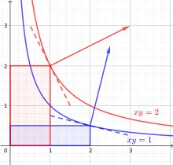
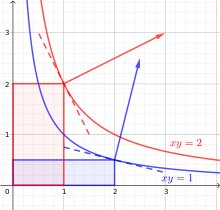
Maintenant que nous avons accès à la normale pour chaque point de la surface de nos objets nous pouvons commencer à réfléchir à leur rendu. En d’autres termes c’est bien le fragment shader qui sera responsable du calcul de la lumière.
Pour simuler l’éclairage (le lighting en anglais) du monde réel sur nos ordinateurs on se base sur des modèles qui sont une approximation de la physique de la lumière telle que nous la connaissons. L’un de ces modèles est appelé le modèle d’éclairage Phong et ses principales composantes sont au nombre de trois: l’éclairage ambiant, l’éclairage diffus et l’éclairage spéculaire (voir 1.22).

L’éclairage ambiant est celui que l’on observe dans un lieu sombre. Si notre environnement est obscur nous parvenons tout de même à distinguer des formes dans le noir car il existe quelque part une faible source lumineuse qui éclaire (la lune par exemple).
L’éclairage diffus quant à lui simule l’impact directionnel d’une source lumineuse sur un objet. C’est celle que l’on observe le plus dans la vie de tous les jours (un mur éclairé par exemple). Ce que l’on remarque avec cette composante, c’est que plus une partie d’un objet est orientée vers la source de lumière, plus elle devient lumineuse. Pour s’en convaincre, on peut jouer avec l’inclinaison d’une lampe torche dirigée vers un mur.
Enfin, l’éclairage spéculaire simule le point lumineux d’une lumière qui apparaît sur les objets brillants. Un exemple caractéristique est celui de la tâche brillante qui apparaît sur la carrosserie des voitures en plein soleil.
Tout l’art de l’éclairage consiste à simuler ces trois composantes pour créer des scènes intéressantes.
Pour appliquer la composante de lumière ambiante en GLSL il nous suffit de rajouter une constante d’éclairage qui donnera toujours une couleur à l’objet (voir 1.23). Nous prenons la couleur de la lumière, nous la multiplions avec un petit facteur ambiant constant, puis nous la multiplions avec la couleur de l’objet et enfin nous l’utilisons comme couleur du fragment dans le shader de l’objet. Nous n’avons pas besoin de modéliser la source lumineuse car l’ajout de l’éclairage ambiant en code est entièrement artificiel.
float ambientStrength = 0.1;
vec3 ambient = ambientStrength * lightColor;
vec3 result = ambient * objectColor;
FragColor = vec4(result, 1.0);Pour l’éclairage diffus, nous aurons besoin d’outils mathématiques mais aussi d’une représentation de la lumière. Cette dernière peut être définie par une position dans l’espace 3D. Dans la section consacrée au calcul de normales nous symbolisions la direction par un vecteur avec trois composantes mais rien ne nous empêche d’utiliser cette même structure pour traduire la position de la source lumineuse.
vec3 lightPosition = vec3(2, 2, 4);Ici on considère une source de lumière positionnelle comme une ampoule, c’est à dire que chaque point de la surface de nos objets recevra un rayon lumineux différent (tous les rayons ont une direction différente selon le point de la surface, voir [diffuse00]).
Pour représenter cette direction du rayon lumineux qui diffère pour chaque point de la surface de l’objet nous devons calculer le vecteur représentant la direction du rayon lumineux. Le calcul est assez simple, la direction du rayon lumineux sera la différence entre la position de la lumière et le point que nous obtenons en retour de la boucle de ray marching. Il ne faut pas oublier de normaliser le résultat car seule la direction nous importe.
vec3 lightDirection = normalize(lightPosition - p);Pour connaître la quantité de lumière qui frappe la surface de notre objet, nous devons utiliser le produit scalaire16 entre le rayon lumineux et la normale. Le produit scalaire se révèle souvent très pratique car il permet de connaître le degré de colinéarité17 de deux vecteurs. Si les deux vecteurs ont la même direction, le résultat du produit scalaire sera \(1\). S’ils ont des directions opposées il renverra \(-1\). S’ils sont orthogonaux18 le résultat sera nul. Enfin, dans tous les autres cas le produit scalaire retournera une valeur comprise entre \(-1\) et \(1\) qui correspondra au degré de colinéarité des deux vecteurs.
Le produit scalaire renvoie donc un scalaire que nous pouvons utiliser pour calculer l’impact de la lumière sur la couleur du fragment, ce qui donne des fragments éclairés différemment en fonction de leur orientation par rapport à la lumière.
En GLSL, nous utilisons la fonction pour calculer cette valeur.
float dif = dot(normal, lightDirection); // dif = diffuse reflectionLorsque nous effectuons le produit scalaire entre les vecteurs de la normale et de la direction de la lumière, il se peut que nous obtenions une valeur négative car renvoie des valeurs entre \(-1\) et \(+1\). Pour maintenir la valeur entre \(0\) et \(1\) afin d’obtenir une plage de valeurs plus correcte, nous pouvons utiliser la fonction .
float dif = clamp(dot(normal, lightDirection), 0., 1.);Maintenant si on veut rajouter un peu de couleur à notre objet il suffit de multiplier la valeur de la réflection diffuse par un vecteur de couleur qui simulera la couleur du matériau:
col = vec3(dif) * vec3(1, 0.58, 0.29);La dernière composante de lumière à implémenter est l’éclairage spéculaire. Dans la réalité, les matériaux tels que les métaux et les surfaces polies présentent une réflexion spéculaire qui semble plus brillante en fonction de l’angle de la caméra ou de l’endroit où le spectateur fait face à l’objet. Comme l’éclairage diffus, l’éclairage spéculaire est basé sur le vecteur de direction de la lumière et les vecteurs de normales de l’objet, mais cette fois il est également basé sur la direction de la vue, c’est-à-dire la direction à partir de laquelle l’observateur regarde le fragment.
Comme l’éclairage spéculaire est basé sur les propriétés réfléchissantes des surfaces, si nous considérons la surface de l’objet comme un miroir, l’éclairage spéculaire est le plus fort là où nous voyons la lumière se refléter sur la surface (voir [specular00]). Sur le schéma, plus l’angle formé par le vecteur \(\vec{R}\) et le vecteur de vue (en gris) est petit plus l’impact de la lumière spéculaire sera important.


Nous avons vu précédemment comment mesurer un angle entre deux vecteurs avec la fonction . Avec la fonction intégrée19 nous pouvons calculer la direction du rayon réfléchi à partir du rayon incident. Cette fonction prend deux paramètres : le vecteur de direction du rayon incident et le vecteur normal.
Nous avons déjà calculé le vecteur de direction de la lumière pour le calcul de la lumière diffuse. La seule variable supplémentaire dont nous avons besoin pour calculer l’éclairage spéculaire est le vecteur de vue. Mais celui-ci est assez simple à calculer, c’est le vecteur qui part du point d’origine de notre ray marching et qui se dirige vers le point de notre surface.
Dans le code GLSL, la valeur \(k\_s\) est la constante de réflexion spéculaire qui influera sur l’étalement de la tâche brillante, la valeur \(i\_s\) représente la couleur de la spéculaire, ici un blanc pur.
mat3 camera(vec3 cameraPos, vec3 lookAtPoint) {
// specular
float k_s = 0.6;
float dotRV = clamp(dot(reflect(lightDir, normal), -rd), 0., 1.);
vec3 i_s = vec3(1, 1, 1);
float alpha = 10.;
vec3 specular = k_s * pow(dotRV, alpha) * i_s;
}En conclusion, la spéculaire peut réellement améliorer l’aspect de notre scène en ajoutant un peu d’éclat ou de brillance à nos objets.
const int MAX_MARCHING_STEPS = 255;
const float MIN_DIST = 0.0;
const float MAX_DIST = 100.0;
const float PRECISION = 0.001;
float sdSphere(vec3 p, float r )
{
vec3 offset = vec3(0, 0, -2);
return length(p - offset) - r;
}
float rayMarch(vec3 ro, vec3 rd, float start, float end) {
float depth = start;
for (int i = 0; i < MAX_MARCHING_STEPS; i++) {
vec3 p = ro + depth * rd;
float d = sdSphere(p, 1.);
depth += d;
if (d < PRECISION || depth > end) break;
}
return depth;
}
vec3 calcNormal(vec3 p) {
vec2 e = vec2(1.0, -1.0) * 0.0005; // epsilon
float r = 1.; // rayon de la sphere
return normalize(
e.xyy * sdSphere(p + e.xyy, r) +
e.yyx * sdSphere(p + e.yyx, r) +
e.yxy * sdSphere(p + e.yxy, r) +
e.xxx * sdSphere(p + e.xxx, r));
}
void mainImage( out vec4 fragColor, in vec2 fragCoord )
{
vec2 uv = (fragCoord-.5*iResolution.xy)/iResolution.y;
vec3 backgroundColor = vec3(0.835, 1, 1);
vec3 col = vec3(0);
vec3 ro = vec3(0, 0, 3); // ray origin qui represente la position de la camera
vec3 rd = normalize(vec3(uv, -1)); // ray direction
float d = rayMarch(ro, rd, MIN_DIST, MAX_DIST); // distance par rapport a la sphere
if (d > MAX_DIST) {
col = backgroundColor; // le rayon n a rien touche
} else {
vec3 p = ro + rd * d; // le rayon a touche la sphere au point p
vec3 normal = calcNormal(p);
vec3 lightPosition = vec3(2, 2, 7);
vec3 lightDirection = normalize(lightPosition - p);
// calculer la diffuse grace au produit scalaire
// entre la normale et la direction de la lumiere.
float dif = clamp(dot(normal, lightDirection), 0.3, 1.);
// ajouter la couleur orange
// et une couleur pour le background
col = dif * vec3(1, 0.58, 0.29) + backgroundColor * .2;
}
// sortie vers l ecran
fragColor = vec4(col, 1.0);
}Une stratégie particulièrement efficace en livecoding consiste à pouvoir différencier les objets afin de leur appliquer des matériaux distincts. Pour ce faire, il est nécessaire de refactoriser le code, notamment les fonctions décrivant les objets à l’aide des SDF, de manière à ce qu’elles retournent un identifiant en plus de la distance.
vec2 float _cube(vec3 p, vec3 s) // s pour size en X,Y,Z
{
vec3 l = abs(p)-s;
return max(l.x,max(l.y,l.z)); // combinaisons d intersection des 3 axes
}L’autre fonction à redéfinir est la fonctions qui nous permettait de combiner nos formes. Désormais, comme elle reçoit en paramètre un contenant la distance et l’identifiant, elle doit comparer les distances avant de retourner le .
vec2 _min(vec2 a, vec2 b)
{
if(a.x < b.x) return a;
return b;
}D’autres parties du code doivent être refactorisées en conséquence, tel que le calcul de la normale qui dépendait de la fonction de calcul de distance qui est maintenant modifiée. Le calcul de la normale devient alors:
vec3 getNorm(vec3 p)
{
vec2 eps = vec2(.01,0.);
// on rajoute .x pour recuperer la composante qui decrit la distance
return normalize(
vec3(map(p-eps.xyy).x,map(p-eps.yxy).x,map(p-eps.yyx).x)
-vec3(map(p+eps.xyy).x,map(p+eps.yxy).x,map(p+eps.yyx).x)
);
}Ensuite, lors du rendu, il est possible d’assigner des couleurs à chaque objet en examinant l’identifiant de l’objet le plus proche renvoyé par l’algorithme de ray marching. Lorsqu’il est établi qu’un objet a été touché par le rayon, il est possible de déterminer lequel en effectuant un test sur son identifiant.
for(float i=0.; i<128.;i++)
{
// cartographie la scene, le vec2 contient la distance et l'id des objets de la scene
vec2 res = map(p);
// on compare la distance
if(res.x < .01)
{
// on discrimine les objets
if (res.y > 2.) (...);
if (res.y > 1.) (...);
if (res.y > 0.) (...);
break;
}
p+= rd*res.x;
}On peut remarquer un détail dans le code : les identifiants des objets sont représentés par des valeurs fractionnaires (), c’est-à-dire des nombres à virgule dans le langage courant. Ensuite, nous vérifions l’identifiant dans la fonction de rendu en examinant si cette valeur fractionnaire est supérieure à un nombre entier.
Une alternative aurait été d’utiliser des nombres entiers pour identifier les objets, puis d’utiliser l’opérateur d’égalité pour déterminer quel objet est touché par le rayon. Cependant, cette méthode, bien que plus naturelle et intuitive, ne fonctionne pas de manière fiable avec tous les compilateurs. En effet, le comportement de l’opérateur peut varier selon les architectures, ce qui peut entraîner des situations difficiles à déboguer.
La méthode la plus sûre reste l’utilisation de valeurs fractionnaires et d’une vérification avec l’opérateur « supérieur à » () car cela garantit un rendu correct de la scène.
Cette méthode de discrimination des objets est extrêmement utile en livecoding, car elle est intuitive et rapide à mettre en œuvre. Bien qu’il existe d’autres approches, elles sont souvent plus complexes à implémenter, et donc peu adaptées à la scène.
Parmi ces techniques, de nombreuses utilisent les structures inspirées du langage C++ (), qui sont un autre moyen pour organiser le code en GLSL. Les structures peuvent être imaginées comme une combinaison de variables pour représenter des concepts. Par exemple, on peut définir une structure spécifique pour représenter le concept de surface dans le monde physique :
struct Surface {
float signedDistance;
vec3 color;
};À la relecture du code, on comprend clairement que la surface possède deux propriétés: sa distance par rapport à la caméra et une couleur associée à son matériau. Toute l’astuce ensuite consiste à réadapter son code (cohérence des valeurs de retour, refactorisation de certaines fonctions). Une fonction de distance prenant en compte cette nouvelle structure pourrait être réécrite de la manière suivante :
Surface sdSphere(vec3 p, float r, vec3 offset, vec3 col)
{
float d = length(p - offset) - r;
return Surface(d, col); // We're initializing a new "Surface" struct here and then returning it
}Dans un contexte en dehors du livecoding, l’utilisation de structures semble être le choix le plus judicieux pour améliorer la lisibilité du code, car elles permettent une organisation claire et cohérente des données. Les structures rendent le code plus facile à interpréter et donnent un aspect plus soigné.
Cette approche de conceptualisation du code, similaire à la programmation orientée objet, pourrait également être appliquée aux lumières. En effet, chaque lumière pourrait être représentée par une structure regroupant ses différentes caractéristiques telles que sa couleur, sa position et son intensité. Cela faciliterait la gestion et la manipulation des lumières dans le code, rendant ainsi le programme plus modulaire et plus facile à maintenir.
Maintenant que avons la capacité de dessiner notre scène et de calculer son éclairage, on pourrait rajouter une caméra pour permettre de naviguer dans la scène. Cela offrirait davantage de contrôle sur ce que le spectateur observe, enrichissant ainsi l’expérience visuelle.
Jusqu’à présent, nous avons représenté la caméra comme un simple point fixe dirigé vers la scène. Cependant, pour créer une caméra plus flexible, similaire à celles que nous utilisons couramment dans les logiciels de modélisation 3D tels que Maya (permettant des rotations autour des objets ou le ciblage de certaines parties de la scène), nous devons utiliser des concepts mathématiques relativement simples à assimiler.
Pour intégrer la caméra souhaitée, nous aurions besoin d’une fonction prenant en paramètre l’origine du rayon et le point à observer qui nous renverrait une matrice de dimensions \(3\times3\) à multiplier pour obtenir la nouvelle direction du rayon pour le calcul du ray marching. Avant d’expliquer les mathématiques qui se cachent derrière, examinons le code final:
mat3 camera(vec3 cameraPos, vec3 lookAtPoint) {
vec3 cd = normalize(lookAtPoint - cameraPos); // camera direction
vec3 cr = normalize(cross(vec3(0, 1, 0), cd)); // camera right
vec3 cu = normalize(cross(cd, cr)); // camera up
return mat3(-cr, cu, -cd);
}
L’image 1.25 nous permet de comprendre comment cette matrice \(3\times3\) a été construite. Nous devons déterminer où la caméra regarde et comment elle est inclinée en analysant trois vecteurs importants de la caméra : le vecteur « direction de la caméra » (), le vecteur « droite de la caméra » () et le vecteur « haut de la caméra » ().
À la première étape, nous recevons simplement l’origine du rayon comme position de la caméra. La deuxième étape permet de calculer la direction du rayon. Elle s’obtient en faisant la soustraction entre le point que l’on vise et la position de la caméra. Encore une fois on normalise ce vecteur car seule la direction nous importe.
vec3 cd = normalize(lookAtPoint - cameraPos); // direction de la cameraLors de la troisième étape on veut calculer le vecteur « à droite de la caméra ». Pour cela on utilise le produit vectoriel (cross product en anglais, en code) entre un vecteur unitaire toujours dirigé vers le haut () et le vecteur de direction obtenu à l’étape précédente:
vec3 cd = normalize(lookAtPoint - cameraPos); // direction de la cameraEnfin à la dernière étape, toujours avec le produit vectoriel nous obtenons le vecteur « caméra vers le haut » grâce aux vecteurs « caméra vers la droite » et « direction des rayons ».
vec3 cu = normalize(cross(cd, cr)); // camera upNous pouvons alors créer une matrice de transformation \(3\times3\) en combinant tous ces vecteurs nouvellement calculés.
return mat3(-cr, cu, -cd);Le signe négatif devant et est une convention simple qui indique le sens de la direction le long de chaque axe. En pratique, il suffit désormais de spécifier un point d’observation et un point d’origine, puis de les passer à notre fonction . Cela nous permettra d’obtenir le nouveau rayon de direction, à partir duquel nous pouvons ensuite démarrer l’algorithme de ray marching.
vec3 lp = vec3(0, 0, 0); // le point qu'on observe
vec3 ro = vec3(0, 0, 3); // la position de la camera
vec3 rd = camera(ro, lp) * normalize(vec3(uv, -1)); // le nouveau rayon de directionNous obtenons ainsi une caméra bien plus flexible, capable d’ajuster la direction des rayons en fonction de sa position et/ou du point qu’elle observe. Par exemple, pour effectuer une rotation autour d’un objet, il suffit de décrire une trajectoire circulaire de la caméra en utilisant les coordonnées polaires pour la position d’origine, tout en maintenant la hauteur constante. Cette rotation peut être réalisée en modifiant les coordonnées polaires de la position d’origine de la caméra, et en utilisant les fonctions trigonométriques telles que et appliquées au temps pour obtenir un mouvement circulaire cyclique et constant.
vec3 lp = vec3(0, 0.5, -4); // point observe
vec3 ro = vec3(0, 0.5, 0); // position de la camera
// on fixe une distance pour la camera
float cameraRadius = 10.;
// on modifie la position de la camera en fonction du temps
ro.x = cameraRadius * cos(iTime) + lp.x;
ro.z = cameraRadius * sin(iTime) + lp.z;
vec3 rd = camera(ro, lp) * normalize(vec3(uv, -1)); // nouvelle direction de rayonNous avons récemment exploré la représentation d’une scène 3D en utilisant l’algorithme de ray marching appliqué à nos SDF décrivant la scène. Avec seulement une vingtaine de lignes de code, il est possible d’animer et de rendre un objet 3D, sans avoir besoin d’un moteur de rendu externe.
Auparavant, nous avons également introduit la fonction , qui facilite la fusion harmonieuse des objets. Nous allons désormais nous pencher sur la répétition de domaine, une technique qui permet de reproduire un objet un nombre infini de fois avec une seule ligne de code, évitant ainsi la nécessité de créer une infrastructure d’instanciation complexe. Cette section est dédiée à l’exploration approfondie de cette méthode, en mettant en évidence ses avantages, ses limites et ses applications.

La répétition de domaine vise à transformer une SDF, exprimée sous forme de fonction mathématique, en une forme périodique, la faisant se répéter continuellement dans l’espace, à l’image d’une fonction . Pour illustrer, voici une méthode simple pour rendre une SDF périodique dans la direction \(X\) :
// repetition de l'espace
float repeated( vec3 p )
{
p.x = p.x - round(p.x);
return sdf(p);
}Dans ce contexte, représente la forme fondamentale que nous souhaitons répéter. La fonction détermine l’entier le plus proche de \(x\) et l’utilise comme nouveau centre de coordonnées. Cela établit un nouveau système de coordonnées tous les \(1\) unité de distance, formant ainsi une mosaïque spatiale dans la direction \(x\). Autrement dit, cette opération recentre continuellement le domaine de la fonction, \(p\), dans l’intervalle \((-0.5, 0.5)\). Si la SDF (représentée par une boîte arrondie dans les images [repet00] et 1.27) est définie dans cet intervalle, elle adoptera un comportement périodique.


Il est possible d’améliorer la méthode en offrant la possibilité de contrôler l’espacement entre les répétitions, correspondant à la période de la fonction. Cette personnalisation s’effectue en ajustant l’échelle du domaine avant de réinitialiser le système de coordonnées périodique, et en corrigeant cette échelle par la suite.
// repeter l'espace tous les s unites
float repeated( vec3 p, float s )
{
vec2 r = p - s*round(p/s);
return sdf(r);
}La nature ne présente que rarement des formes parfaitement régulières, de sorte que rien ne se reproduit à l’identique ou à des intervalles strictement égaux. Il est donc souhaitable que chaque instance de nos SDF se distingue légèrement, voire radicalement, des autres.
La première étape consiste à définir un mécanisme permettant d’identifier chaque instance au sein de notre grille infinie et de lui attribuer un identifiant unique. Cette tâche est facilitée par la fonction , qui nous permet de positionner notre système de coordonnées sur l’entier le plus proche du domaine. Ainsi, cet entier devient un identifiant unique pour chaque instance de SDF. Dans un espace 2D ou 3D, cet identifiant sera également en 2D ou 3D, assurant ainsi un identifiant distinct par dimension. En 3D, la création et l’utilisation de cet identifiant se ferait en modifiant le code précédent comme suit :
// repeter l'espace tous les s unites
float repeated( vec3 p, float s )
{
vec3 id = round(p/s);
vec2 r = p - s*id;
return sdf(r, id);
}On peut exploiter cet identifiant pour moduler la taille de notre SDF. Néanmoins, la méthode de répétition de domaine que nous avons précédemment décrite présente une erreur, comme le montre l’image ci-dessous ([repet03] et 1.28). On observe des discontinuités où les lignes de distance ne s’alignent pas parfaitement. Une zone problématique est mise en évidence en jaune dans la version agrandie de cette image. Ces discontinuités sont révélatrices d’une SDF incorrectement définie.


Le problème provient de l’usage de la fonction dans la fonction , qui assigne chaque point à une cellule spécifique de la grille, ne connaissant ainsi qu’une seule instance de . Bien que cela soit efficace, cela échoue si l’instance la plus proche n’est pas dans la même cellule que . Cette situation peut se produire si une cellule voisine contient une instance significativement plus grande, rendant l’instance la plus proche celle de cette cellule voisine.
Ce problème de distances incorrectes se produit en général lorsqu’on effectue une opération qui casse la symétrie le long des frontières des cellules (comme la rotation ou la mise à l’échelle).
Lorsque nous évaluons notre SDF au point avec notre fonction , il ne suffit pas de se limiter à l’instance centrale de la cellule actuelle. En effet, la forme la plus proche pourrait se situer dans une cellule adjacente. Ainsi, nous devons vérifier les cellules voisines, évaluer et déterminer la distance la plus courte parmi elles. Bien que cela puisse paraître comme un nombre d’évaluations supplémentaires conséquentes de (notre boîte arrondie ici), nous pouvons optimiser cette approche. Il nous faut explorer uniquement les cellules voisines susceptibles de contenir une instance plus proche que celle du point actuel. Ces cellules se limitent aux côtés les plus proches de notre point d’échantillonnage . Ainsi, en 2D, au lieu de vérifier les \(9\) cellules attendues (la cellule actuelle et ses \(8\) voisines), nous en examinons seulement \(4\) (la cellule actuelle et \(3\) voisines). En 1D, nous échantillonnons \(2\) cellules (actuelle et une voisine) au lieu de \(3\), et en 3D, ce sont \(8\) cellules (actuelle et \(7\) voisines) au lieu de \(27\).
float repeated( vec2 p, float s )
{
vec2 id = round(p/s);
vec2 o = sign(p-s*id);
float d = 1e20;
for( int j=0; j<2; j++ )
for( int i=0; i<2; i++ )
{
vec2 rid = id + vec2(i,j)*o;
vec2 r = p - s*rid;
d = min( d, sdf(r) );
}
return d;
}Ici, la fonction se charge de déterminer si le voisin gauche ou droit doit être vérifié pour la proximité de forme (ou haut contre face avant et haut contre bas). La SDF ainsi calculée est correcte (voir [repet05]).
 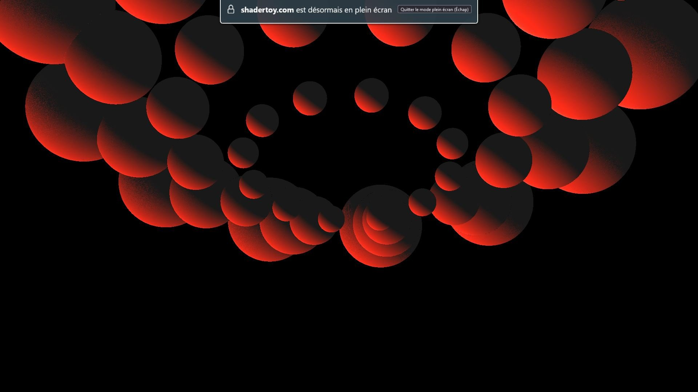
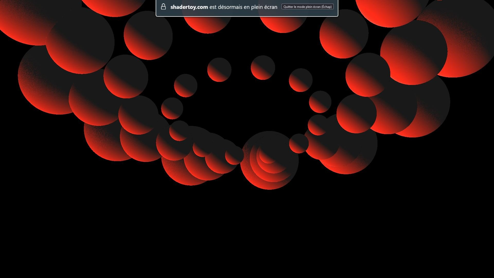
Nous observons également (1.29) que la répétition de domaine peut être étendue aux coordonnées polaires plutôt qu’aux coordonnées cartésiennes. Les coordonnées polaires constitueront le sujet de notre prochaine section.
Alt paa sin rette Plads!
Hans Christian Andersen
Une explication s’avère nécessaire quant au choix délibéré de l’épigraphe située ci-dessus. Alt paa sin rette Plads! est à la fois le titre d’un conte d’Andersen et une expression danoise qui se traduit littéralement par « Tout à sa place correcte ! ». C’est un clin d’œil à Andersen, célèbre pour ses contes adaptés en films d’animation par Disney, bien que ces adaptations soient souvent très éloignées de ses œuvres originales qui nous ont marqués, comme « La Petite Sirène » ou « La Reine des Neiges ». Mais au-delà de cet hommage, c’est aussi une manière pour moi de mettre en lumière le fait que l’écriture d’un shader requiert un haut degré d’organisation, de logique, et ne se base pas uniquement sur l’intuition. Avant l’art, il y a la technique.
Le passage aux coordonnées polaires revêt une importance particulière. En effet, il est courant d’utiliser les coordonnées polaires pour passer d’un système de référence cartésien, tel qu’une grille rectangulaire, à un système de référence circulaire, mieux adapté à certaines formes comme les images 2.1 où l’on voit que le rayon de la sphère est sculpté à intervalles réguliers sur le plan \(XZ\).

Jusqu’à présent, nous avons travaillé avec les coordonnées cartésiennes20, où le centre de l’écran correspondait à l’origine. À partir de ce système cartésien, nous pouvons calculer les coordonnées polaires, permettant ainsi une représentation de l’espace sous une forme circulaire. Alors que dans l’espace cartésien 2D le pixel est décrit par ses coordonnées \(X\) et \(Y\), dans le système de coordonnées polaires, chaque pixel est défini par son angle \(\theta\) et sa distance \(r\) par rapport à l’origine. Dans le schéma (2.2) le pixel n’est plus défini en termes de \(X\) et \(Y\) mais termes de \(r\) et de l’angle \(\theta\).
En code nous utilisons la fonction trigonométrique pour obtenir l’angle et à la fonction pour obtenir le rayon. Nous pouvons ensuite stocker le résultat dans un vecteur (voir [polarX] et 2.3). Les images [polarX] et 2.3 représentent respectivement l’angle des coordonnées uv et la distance des pixels par rapport au centre.
float pixel_angle = atan(uv.x,uv.y) ;
float pixel_distance = length(uv)* 2.0 ;
vec2 st = vec2(pixel_angle , pixel_distance);

Cependant, la représentation de l’angle n’est pas correcte car la fonction renvoie l’angle en radians compris entre \(0\) et \(2\pi\). Pour corriger cela, il est nécessaire de remapper21 ces valeurs dans l’intervalle de \(0\) à \(1\) en divisant le résultat par \(2\pi\) (voir [polar00]). Cependant, même après ce remappage, la moitié gauche de l’écran reste complètement noire en raison des valeurs négatives. Pour résoudre ce problème, nous ajoutons \(0.5\) au résultat pour obtenir un dégradé complet (voir 2.4).
fragColor = vec4(st.x / PI_2 + 0.5 );
Lorsque nous assignons une texture dans ces coordonnées polaires, nous obtenons effectivement une représentation circulaire (voir [polar02]).


En combinaison avec la répétition de l’espace on pourrait aussi sectoriser l’espace des coordonnées polaires, afin par exemple de pouvoir créer tentacules ou tout autre objet à intervalles réguliers (voir 2.5).
Les effets de post-traitement22 (post-process en anglais), tels que le flou23 ou l’aberration chromatique24, sont finalement relativement simples à implémenter dans le fragment shader (voir [blur00] et 2.6 ).

En OpenGL, la texture d’origine serait gérée dans un frame buffer25 plutôt compliqué à manipuler. Cependant, dans des environnements de développement tels que Shadertoy ou KodeLife la démarche est plus aisée car il suffit de créer des passes successives (voir [shadertoy00] et 2.7).
En pratique, il suffit d’appliquer un shader d’effet sur un shader d’origine (voir [mapuv01] et 2.8), qui sera interprété comme une texture. Dans l’image 2.8, nous avons appliqué un shader en tant que texture sur une télévision.
Il est à noter que le shader d’origine utilise les L-systèmes26, également connus sous le nom de systèmes de Lindenmayer, pour représenter l’arbre.

 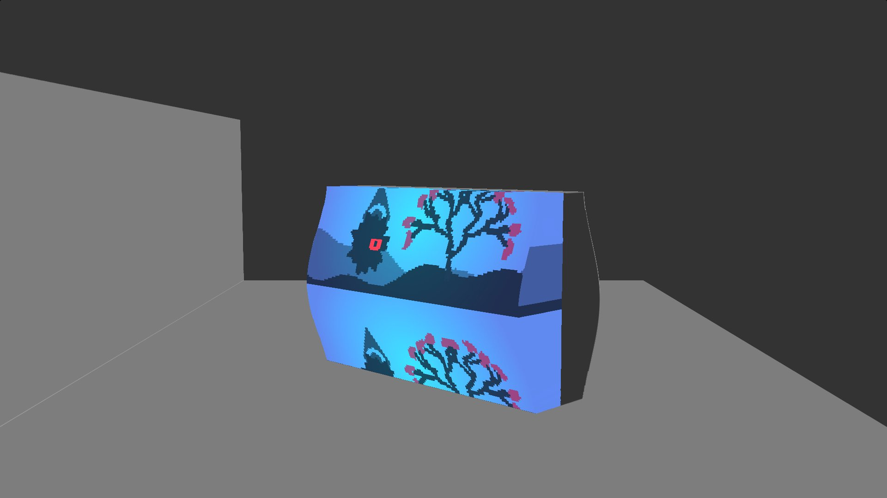
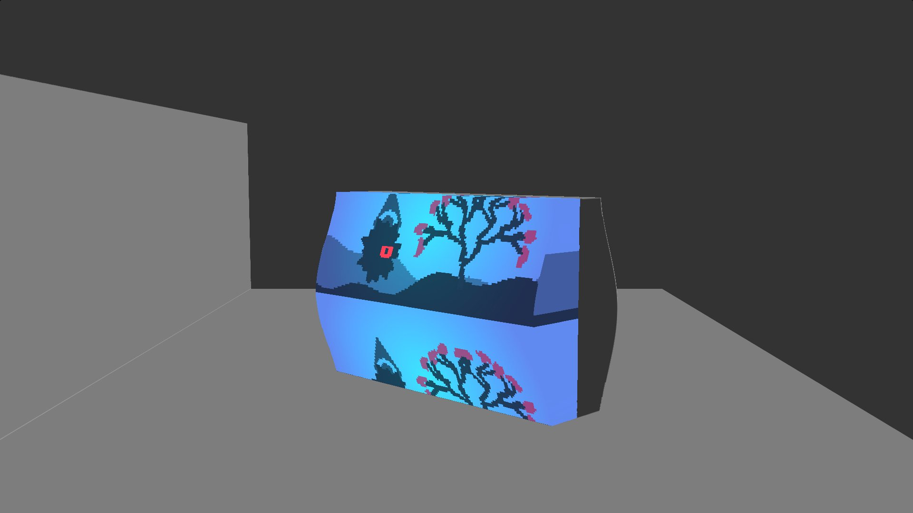
Grâce à la technique du ray marching, nous créons la scène constituée d’un cube qui tourne pour représenter une télévision et d’un cube vu de l’intérieur qui représente la pièce. Lorsque le rayon touche la pièce, nous appliquons un éclairage classique. En revanche, lorsque nous touchons le téléviseur, nous voulons appliquer la texture. La difficulté rencontrée réside donc dans la récupération des bonnes valeurs de coordonnées de l’espace sur lequel nous allons appliquer la texture. La principale difficulté en termes de code est de bien penser à sauvegarder l’espace de la SDF qui tourne dans une variable globale.
// variable globale pour sauvegarder
// l espace de la tv qui tourne pour mapper la texture plus tard
vec3 ptv;
// la description de la scene refactorisee, renvoie la distance + un id
vec2 map(vec3 p)
{
(...)
// on sauvegarde un espace dedie pour le cube qui tourne
vec3 p2 = p;
// on le translate en Y
p2 -= vec3(0.,-1.5+sin(iTime),5.);
// on le rot sur Y
p2.xz *= r2d(iTime);
// important: on sauvegarde l espace dans la variable globale en vue
// de dessiner la texture
ptv = p2;
// une variable pour controler l effet bombe de la tv
float thick = mix(.4,.2,sin(p2.y*2.-1.57)*.5+.5);
float tv = _cube(p2, vec3(1.,0.7,thick)*2.);
//room = min(room, length(p2)-1.);
// on l'ajoute
acc = _min(acc, vec2(tv, 1.));
return acc;
}De cette manière, nous pouvons réutiliser cet espace au moment du rendu du téléviseur. En discriminant les objets, nous pouvons déterminer quand nous faisons référence au téléviseur. En ajoutant une condition sur la profondeur, nous sommes en mesure de projeter la texture uniquement sur la face avant de l’objet.
// dans la fonction de \textit{ray marching}
if (res.y == 1. && ptv.z < 0.)
{
// on projette la texture sur XY
// bien penser a equilibrer les valeurs
col = texture(iChannel0, ptv.xy*vec2(1.,2.)*.25+.5+vec2(0.,.5)).xyz;
}Dans le domaine des images de synthèse, un défi récurrent est l’apparence souvent trop lisse et parfaite de ces rendus. Dans la nature, les objets présentent des aspérités, des irrégularités et diverses imperfections.
La problématique centrale réside dans la recherche de méthodes pour intégrer cette complexité naturelle dans les images générées. Bien qu’il soit tentant de capturer des images réelles pour simuler un aspect plus naturel, une approche alternative consiste à recourir aux mathématiques pour générer des motifs qui, bien que déterministes, donnent l’illusion de l’aléatoire. En ajustant judicieusement les paramètres, on peut obtenir des résultats qui semblent naturellement aléatoires, ouvrant ainsi des perspectives intéressantes pour améliorer nos shaders.
Pour obtenir une génération pseudo-aléatoire mathématique, nous établissons une fonction qui prend un nombre en entrée et retourne un résultat aléatoire compris entre \(0\) et \(1\). Dans notre approche initiale, la coordonnée est utilisée comme référence pour ce calcul.
Ce nombre est ensuite intégré dans une fonction sinusoïdale, le positionnant ainsi sur cette courbe. Pour augmenter la complexité de notre fonction, nous multiplions ce nombre par un facteur important, intensifiant la fréquence de l’onde sinusoïdale.
Étant donné que l’onde sinusoïdale a une amplitude oscillant entre \(-1\) et \(1\), nous ajustons notre résultat en le multipliant par un coefficient. Cela élargit la plage d’amplitude, faisant varier les valeurs entre des niveaux bien plus élevés et plus bas. Enfin, nous utilisons la fonction pour extraire la partie fractionnaire de ce résultat.
float c = fract(sin(uv.x*100.)*5647.);Le rendu final présente un schéma similaire à un code-barres, où chaque colonne de pixels affiche des nuances de couleurs variées, oscillant entre le noir et le blanc (voir [noise00] et 2.9).
 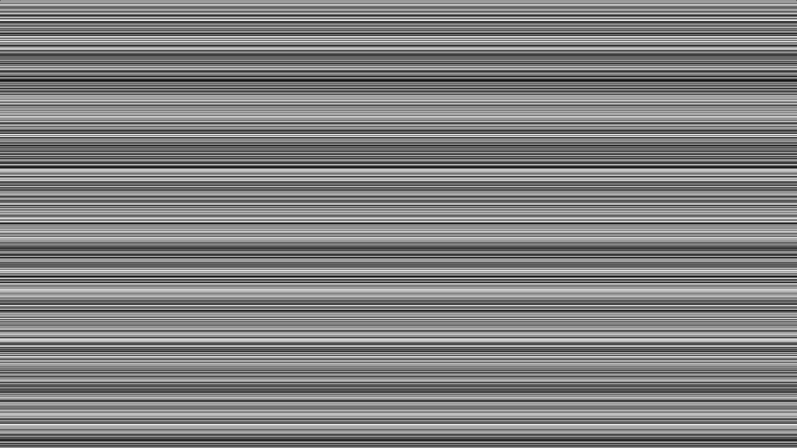
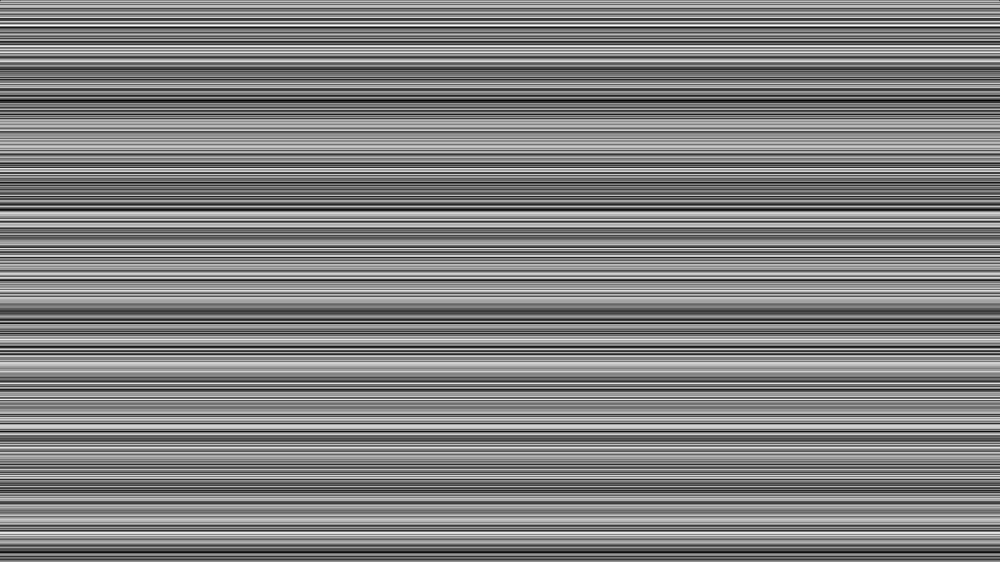
Le prochain objectif est de produire une représentation bidimensionnelle du bruit aléatoire, similaire au grain présent sur les anciennes télévisions cathodiques. Pour parvenir à cela, nous incluons la composante dans notre calcul de génération pseudo-aléatoire, en utilisant une fréquence significativement supérieure à celle de la composante (voir [noise02]).
Il est possible de varier ces paramètres pour obtenir diverses sortes de motifs (patterns27 en anglais). Il est à noter que les résultats peuvent légèrement varier selon la carte graphique utilisée.
Il est possible de regrouper ces calculs au sein d’une fonction, non seulement pour améliorer la lisibilité du code, mais également pour faciliter sa réutilisation. Nous nommons cette fonction car elle accepte une coordonnée 2D en entrée et produit un nombre flottant aléatoire dans l’intervalle \([0, 1]\).
float N21(vec2 p)
{
return fract(sin(p.x*100.+ p.y*546.)*5647.);
}
L’inconvénient majeur de cette approche, est que lorsque nous zoomons sur les uv, on distingue un motif qui montre que ce n’est pas de l’aléatoire mais du pseudo-aléatoire (voir 2.10).
Une autre méthode pour générer de l’aléatoire consiste à utiliser l’interpolation. Nous commençons par établir une grille de cellules en appliquant la fonction à des coordonnées uv multipliées. Chaque cellule est définie par des coordonnées variant dans l’intervalle \([0,1]\) tant en \(X\) qu’en \(Y\). Il nous faut également un identifiant pour déterminer dans quelle cellule nous nous trouvons. La fonction nous permet d’obtenir la partie entière d’un nombre. Les fonctions et sont complémentaires. Par exemple, retourne \(0.53\), tandis que retourne \(1\) (voir [noise04] et 2.11).
 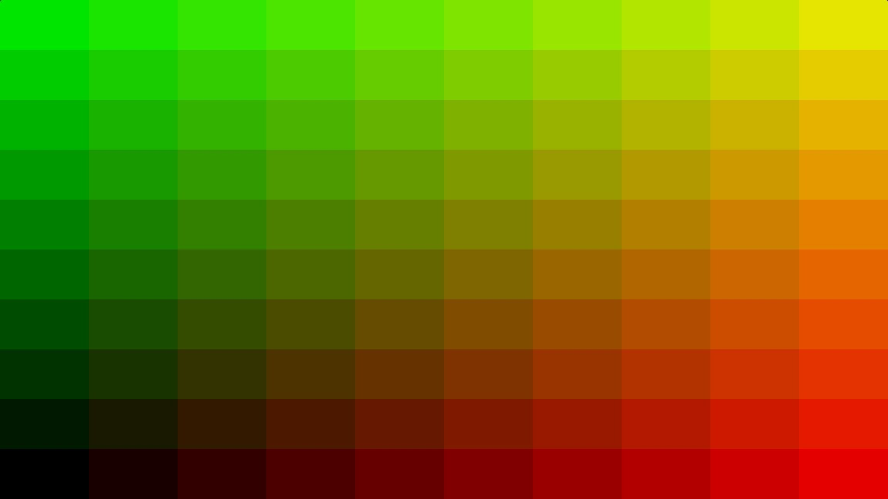
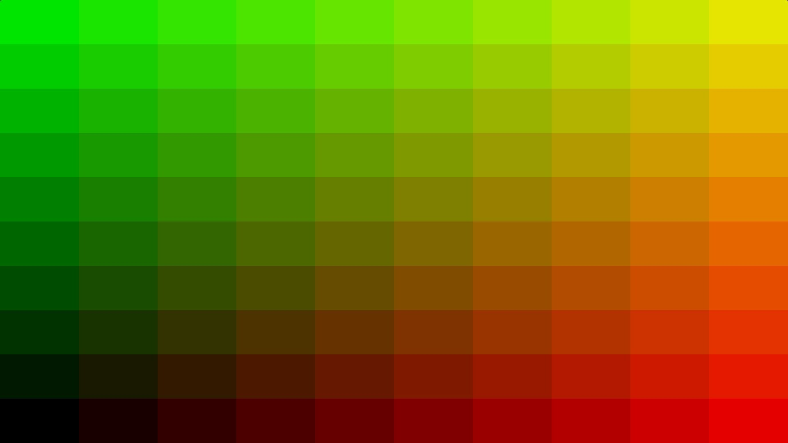
uv*=10.;
vec2 lv = fract(uv);
vec2 id = floor(uv);Pour chaque coin de ces cellules, nous appliquons notre fonction de bruit, générant ainsi une valeur aléatoire pour chaque coin. Puis nous interpolons les valeurs en trois étapes. D’abord entre les coins inférieurs et les coins supérieurs sur l’axe horizontal, et enfin avec une interpolation entre ces résultats sur l’axe vertical.
float bl = N21(id);
float br = N21(id+vec2(1,0));
// interpolation entre les coins bas gauche et bas droite selon X
float b = mix(bl,br,lv.x);
float ul = N21(id+vec2(0,1));
float ur = N21(id+vec2(1,1));
// interpolation entre les coins haut gauche et haut droite selon X
float u = mix(ul,ur,lv.x);
// interpolation des valeur calculees selon Y
float c = mix(b,u,lv.y); 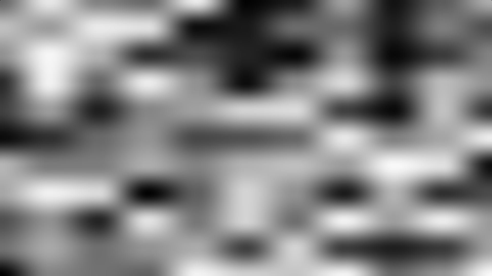
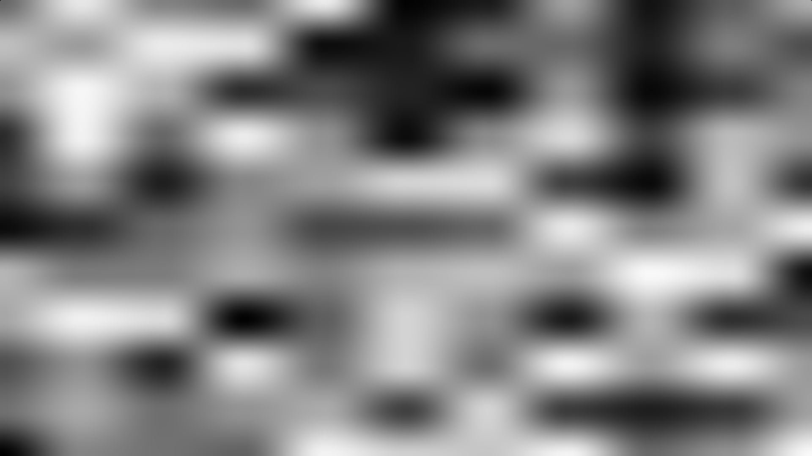
Le rendu obtenu est plus doux que celui précédemment obtenu. Cependant, un inconvénient est que les frontières entre nos cellules sont visibles, créant ainsi des halos en forme de croix, comme illustré dans l’image [noise06]. Ce phénomène est dû à la nature linéaire de notre interpolation. En effet, sur notre grille , les valeurs progressent de manière linéaire de \(0\) à \(1\). Grâce à la fonction , nous avons la possibilité d’atténuer cette linéarité, permettant à l’évolution des valeurs de suivre une trajectoire en « S » plutôt qu’une ligne droite. Le résultat est visible dans l’image 2.12.
vec2 lv = smoothstep(0.,1.,fract(uv));Le bruit de Perlin28, bien qu’étroitement lié au value noise, produit généralement des résultats de meilleure qualité. Une méthode alternative pour son calcul consiste à évaluer la colinéarité entre un vecteur aléatoire et le vecteur s’étendant du coin de chaque cellule vers son centre (voir [noise12] et 2.13).
Le Billow noise est une variante du bruit de Perlin qui produit une apparence de nuage ou de fumée. Il est caractérisé par des transitions douces et des formes arrondies, donnant un aspect ondulé ou nuageux. Contrairement au bruit standard qui varie linéairement entre \(-1\) et \(1\), le Billow noise utilise des valeurs absolues des contributions du bruit, créant des formes plus arrondies et douces (voir [noise10]).
// billow
float billow = abs(perlin);

Le Ridge noise est une autre variante du bruit de Perlin qui produit des crêtes ou des formations montagneuses. Il est similaire au Billow noise, mais utilise des valeurs négatives pour certaines composantes du bruit, créant des formes pointues ou en crêtes. Cette caractéristique lui permet de générer des terrains avec des sommets pointus et des vallées profondes, donnant un aspect plus accidenté ou montagneux (voir 2.14).
float ridged = 1.0- abs(perlin);
ridged = ridged*ridged;Diverses fonctions de bruit génèrent des effets différents. Nous avons abordé le value noise, une forme de bruit doux couramment utilisée pour élaborer des terrains procéduraux infinis, à l’image de ceux de Minecraft ou No Man’s Sky.
Le Voronoi est particulièrement adapté pour créer des motifs organiques rappelant des structures naturelles comme les ailes de libellule, les nervures de feuilles ou encore les taches de la peau des girafes. Il constitue également une base solide pour simuler des nuages réalistes. Ainsi, le bruit de Voronoi peut représenter une technique à inclure dans une boîte à outils dédiée à la conception de shaders.


La mise en place du Voronoi débute par la création d’une grille de cellules, exactement comme pour le value noise (voir [noise04]). Chaque cellule de cette grille peut inclure un point central (voir [noise16]). Par la suite, une itération est effectuée sur chaque pixel afin de calculer la distance minimale vers le point le plus proche (voir 2.16).
 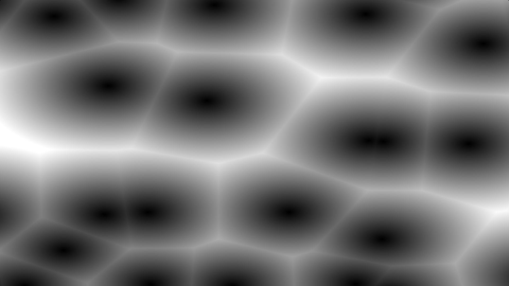
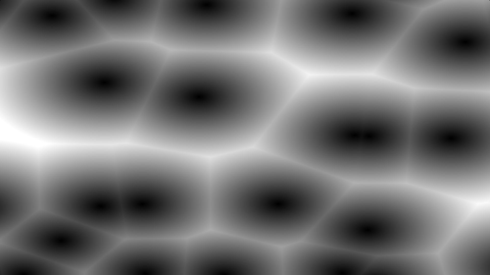
Visuellement, il est manifeste que chaque pixel identifie son point le plus proche à l’intérieur de sa cellule respective. Une représentation graphique de cette distance produit une distribution uniforme des résultats.
Pour apporter une touche plus organique à cette démarche, des décalages peuvent être ajoutés aux points de la grille grâce à l’ajout de bruit. Il est à noter que cette incorporation de bruit entraîne une augmentation du nombre de vérifications dans l’algorithme. Ainsi, chaque pixel doit déterminer le point le plus proche au sein de sa cellule actuelle et dans les huit cellules adjacentes.
float minDistFromPixel;
for (float i = -1.0; i <= 1.0; i++) {
for (float j = -1.0; j <= 1.0; j++) {
vec2 adjGridCoords = vec2(i, j);
vec2 pointOnAdjGrid = adjGridCoords;
vec2 noise = noise2x2(currentGridId + adjGridCoords);
pointOnAdjGrid = adjGridCoords + sin(iTime * noise) * 0.5;
float dist = length(currentGridCoord - pointOnAdjGrid);
minDistFromPixel = min(dist, minDistFromPixel);
pointsOnGrid += smoothstep(0.95, 0.96, 1.0 - dist);
}
}Pour simuler des nuages, il suffit de soustraire la distance minimale du pixel dans le code, ce qui rendra une apparence nuageuse.
Le Fractional Brownian Motion (FBM) est une technique qui, malgré son nom complexe, se révèle assez simple à mettre en œuvre en livecoding pour ceux qui maîtrisent déjà les concepts du bruit. En résumé, la technique du FBM consiste à superposer des couches de bruit afin de composer une texture très détaillée présentant des propriétés d’auto-similarité, présentes aussi dans les fractales (voir [noise09] et 2.17).


Par analogie avec la musique, cette approche de superposition de bruits est souvent qualifiée d’ajout d’octaves de bruit. À chaque nouvelle octave, nous doublons la fréquence et ajustons l’amplitude en conséquence. Bien que chaque octave apporte sa propre richesse visuelle, la combinaison de plusieurs octaves crée une texture plus détaillée, offrant des possibilités de représentation pour des éléments variés tels que les nuages, les vagues, les montagnes, etc (voir [fbm00] et 2.18).
float c = SmoothNoise(uv*4.)*1.;
c+= SmoothNoise(uv*8.)*.50;
c+= SmoothNoise(uv*16.)*.25;
c+= SmoothNoise(uv*32.)*.125;
c+= SmoothNoise(uv*64.)*.0625;
c/=(1.+.5);Le calcul des ombres est en réalité plus simple qu’il n’y paraît. Actuellement, nous utilisons notre méthode de ray marching pour identifier un point de la scène en contact avec nos objets (voir [shad00]). Cette même méthode peut être réutilisée pour générer un second rayon pointant vers la source lumineuse de la scène. Si ce rayon intersecte un objet lors de son trajet entre le point sur la surface et la source lumineuse, cela signifie qu’il y a une occlusion et que le point sur la surface se trouve dans l’ombre.


Dans notre implémentation GLSL, nous répéterons le ray marching une seconde fois, en prenant comme origine le point , découvert lors de la première étape du ray marching lorsque nous avons identifié les objets de la scène. La direction du nouveau rayon sera définie par . Dans notre code, cela se traduit simplement par l’ajout de trois lignes après le calcul de la réflexion diffuse.
float dif = clamp(dot(normal, lightDirection), 0., 1.);
// diffuse reflection clamped between zero and one
vec3 newRayOrigin = p;
// cast shadow ray to the light source
float shadowRayLength = rayMarch(newRayOrigin, lightDirection);
if (shadowRayLength < length(lightPosition - newRayOrigin)) dif *= 0.;
// if the shadow ray hits the sphere,
// set the diffuse reflection to zero,
// simulating a shadowLors de l’exécution du code, l’écran affiche presque entièrement un noir total. Cette obscurité est en réalité due à une raison assez intuitive. Lorsque nous lançons notre second rayon de ray marching vers la source lumineuse, l’algorithme considère le point , qui est en contact direct avec la surface. Par conséquent, dès le premier tour de la boucle, l’algorithme détecte une collision avec un objet, faisant ainsi croire que la plupart de la scène est dans l’ombre, d’où l’écran noir.
Pour résoudre ce problème, il est nécessaire de décaler légèrement le point d’origine du second rayon par rapport à . Fort heureusement, nous sommes en mesure de calculer la normale au point de la surface, ce qui nous permet de nous éloigner subtilement de la surface en suivant la direction de cette normale. Une méthode couramment employée consiste à ajouter la normale du point de la surface, multipliée par une petite valeur, à la position de , afin d’obtenir un point voisin plus approprié pour l’origine du second rayon.
vec3 newRayOrigin = p + normal * PRECISION;L’ombre apparaît encore assez sombre. Pour la rendre plus claire, nous pouvons ajuster la proportion de la réflexion diffuse. Actuellement, nous attribuons la couleur de la réflexion diffuse à zéro pour les points identifiés comme étant dans l’ombre. En modifiant le « facteur d’échelle » et en le fixant à \(0.2\), nous pouvons obtenir une ombre plus légère et plus réaliste (voir 2.19).
if (shadowRayLength < length(lightPosition - newRayOrigin)) dif *= 0.2;
// shadowL’ombre est désormais plus esthétique, permettant d’apercevoir la couleur diffuse du sol à travers elle.
Le glow29, ou effet de brillance, désigne cette capacité d’un objet à paraître lumineux à émettre de la lumière. Dans notre environnement quotidien, plusieurs éléments naturels ou artificiels présentent cette caractéristique, tels que les lucioles, les ampoules, les méduses et même les étoiles dans le ciel. Ces entités peuvent émettre une lumière qui illumine leur environnement, qu’il s’agisse d’une lumière discrète s’étendant sur une courte distance ou d’une lueur intense comparable à celle de la pleine lune.
Pour obtenir un effet de glow réussi, il est crucial d’assurer un contraste prononcé entre la teinte de l’objet et celle de son fond, ainsi qu’un dégradé coloré qui s’atténue progressivement à mesure que l’on s’éloigne de l’objet. En observant ces deux critères, nous pouvons élaborer un effet lumineux efficace (voir [glow1]).
Dans le contexte du code, les SDF génèrent une valeur de distance signée indiquant la distance par rapport à un objet donné. Il convient de rappeler que les shaders dessinent chaque pixel de manière parallèle, ce qui signifie que chaque pixel est positionné à une distance définie de l’objet. Ensuite, nous avons la possibilité de créer une fonction qui introduira un effet de glow proportionnel à la distance par rapport au centre de l’objet. Pour illustrer cette fonction, Desmos30 peut être utilisé en saisissant l’équation \(y = \frac{1}{x}\). Dans ce contexte, \(x\) représente la valeur de distance signée pour l’objet. À mesure que cette valeur s’accroît, la sortie, \(y\), se réduit (voir 2.20).
La fonction \(y = \frac{1}{x}\) peut générer des valeurs imprévues lorsque \(x\) est négatif (\(x\leq0\)). Cette situation peut conduire le compilateur à réaliser des calculs inhabituels, ce qui entraîne des couleurs non anticipées. Pour pallier ce problème, nous pouvons faire appel à la fonction afin de s’assurer que la valeur de l’effet de glow demeure comprise entre \(0\) et \(1\) (voir [glow3]).
float d = length(uv) - 0.2; // signed distance function
vec3 col = vec3(step(0., -d)); // create white circle with black background
float glow = 0.01/d; // create glow and diminish it with distance
glow = clamp(glow, 0., 1.); // remove artifacts
col += glow; // add glow
fragColor = vec4(col,1.0); // output colorIl est possible de multiplier l’effet de glow par une valeur pour rendre l’objet plus lumineux pour faire en sorte que l’effet de glow s’étende sur une plus grande distance (voir 2.21).
col += glow * 5.; // add glow
fragColor = vec4(col,1.0); // output color

Nous venons de détailler la manière de créer un effet de glow pour des formes 2D dans un shader en exploitant les SDF et en instaurant un contraste entre la couleur de la forme et celle de l’arrière-plan. De plus, nous avons généré un dégradé autour des contours de la forme. En combinant ces deux éléments, nous avons réussi à obtenir un effet de brillance simulé dans nos shaders.
En 3D, le principe reste identique, à la différence près que nous accumulons l’effet de brillance lorsque les rayons du ray marching s’approchent de l’objet (voir [shadat15] et 2.22).


// couleur pour le bloom
vec3 accCol = vec3(0.);
// depart du ray marching
for(float i=0.; i<128.;i++)
{
vec2 res = map(p);
if (distance(p, ro) > 20.) // astuce pour pas aller trop loin
break;
if(res.x < .01)
{
(...)
}
p+= rd*res.x;
// accumulation du bloom
// degrade selon l'id de l objet entre rouge et bleu
vec3 rgb = mix(vec3(1., 0.,0.), vec3(0.,0.,1.), res.y);
// permet de definir ou commence ou plutot finit le bloom, ici a 1.5 de la surface
float stBl = (1.-sat(res.x/1.5));
accCol += rgb*0.04*stBl; // ajout du bloom
}
// ajout du bloom
col += accCol;Nous avons initialement entrepris l’étude des techniques fondamentales nécessaires à la programmation d’un fragment shader en temps réel, avant d’approfondir notre exploration avec des techniques avancées visant à améliorer la qualité visuelle. Malheureusement, plusieurs concepts auraient mérité d’être mis en lumière, notamment le Fresnel, le flou, le Truchet, les fractales, la cubemap, la réflexion de la lumière, et dans le domaine sonore, la synthèse sonore générée par les shaders.
En décrivant davantage, le Fresnel fait référence à l’interaction optique entre la lumière et une surface, influençant la manière dont celle-ci se réfléchit en fonction de l’angle d’incidence. Le flou, quant à lui, représente un effet appliqué en post-traitement. Le Truchet se rapporte à la disposition de motifs réguliers pour créer un pavage. Les fractales sont des structures mathématiques caractérisées par leur auto-similarité à différentes échelles. La cubemap est utilisée pour simuler un environnement tridimensionnel autour d’une scène. La réflexion de la lumière dans un contexte de ray marching fait rebondir la trajectoire du rayon de manière symétrique. Enfin, la synthèse sonore en shader permet d’accomplir des tâches généralement réalisées dans des environnements tels que SuperCollider.
Pour améliorer la compréhension de ces techniques non explicitées dans le mémoire, j’ai décidé d’ajouter quelques illustrations des ateliers correspondants, accompagnées d’un lien vers le code source commenté de ces shaders, hébergé sur le wiki du Fuz.
 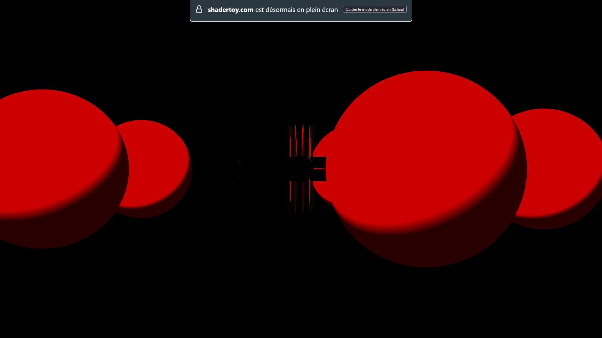
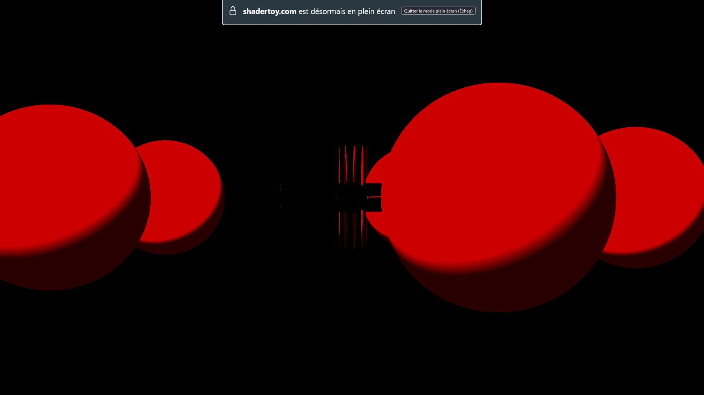
Un node (nœud en français) fait référence à un élément de base dans un système nodal ou graphique utilisé pour créer des matériaux, des effets visuels ou des animations. Chaque node représente généralement une opération spécifique ou une partie du processus de rendu.↩︎
Un pixel est le plus petit élément visible à l’écran, tandis qu’un fragment est une partie de ce pixel contenant des informations détaillées comme la couleur, traitées par le fragment shader pour déterminer la couleur finale du pixel.↩︎
La diffuse map est une texture utilisée dans le rendu 3D pour représenter la couleur de base ou la couleur réfléchie par un objet.↩︎
Une normal map est une texture utilisée dans les graphiques 3D pour simuler des détails géométriques fins et complexes sur une surface sans avoir à augmenter la géométrie réelle de l’objet.↩︎
Dans le contexte des textures, on emploie plutôt le terme texel que pixel.↩︎
Un espace orthonormé fait référence à un système de coordonnées dans lequel les axes sont perpendiculaires (orthogonaux) les uns aux autres et ont une longueur unitaire (normée). Cet espace est souvent utilisé pour représenter des positions, des directions ou des transformations dans un rendu 3D.↩︎
Un sonar, contraction de SOund Navigation And Ranging en anglais, est un dispositif utilisé pour détecter et localiser des objets sous-marins en émettant des impulsions sonores dans l’eau et en écoutant les échos réfléchis par ces objets.↩︎
Le lissage ou smoothness en infographie se réfère généralement à la qualité visuelle d’une surface qui semble lisse ou régulière. Cela peut être attribué à plusieurs facteurs, notamment la quantité de détails visibles sur la surface, la régularité de ses courbes et la manière dont elle réagit à l’éclairage.↩︎
Un quadrant est une subdivision de l’espace en quatre parties égales, souvent désignées comme le premier, deuxième, troisième et quatrième quadrant, en fonction de leur position par rapport aux axes.↩︎
Le théorème de Pythagore énonce que dans un triangle rectangle, le carré de la longueur de l’hypoténuse (le côté opposé à l’angle droit) est égal à la somme des carrés des longueurs des deux autres côtés.↩︎
Les fonctions de distance signée sont utilisées en infographie et en traitement d’image pour mesurer la distance entre un point et une surface.↩︎
La normalisation d’un vecteur est le processus de mise à l’échelle d’un vecteur pour qu’il ait une longueur de \(1\), tout en préservant sa direction.↩︎
Le produit vectoriel de deux vecteurs dans l’espace tridimensionnel donne un vecteur perpendiculaire au plan formé par ces deux vecteurs.↩︎
La norme d’un vecteur, également appelée magnitude ou longueur d’un vecteur, est une mesure de sa taille dans l’espace.↩︎
Le gradient d’une surface est un concept mathématique qui décrit la variation de la fonction de cette surface dans l’espace.↩︎
En informatique graphique, le produit scalaire est une opération mathématique fondamentale utilisée pour mesurer la similitude directionnelle entre deux vecteurs.↩︎
Deux vecteurs sont dits colinéaires s’ils sont parallèles ou anti-parallèles, c’est-à-dire qu’ils ont la même direction ou des directions opposées.↩︎
Deux vecteurs sont dits orthogonaux s’ils sont perpendiculaires l’un à l’autre.↩︎
Une fonction built-in (ou fonction intégrée) est une fonction préexistante dans un langage de programmation ou dans un environnement de développement logiciel.↩︎
Les coordonnées cartésiennes sont un système de coordonnées dans lequel un point dans l’espace est déterminé par sa distance par rapport à deux ou trois axes orthogonaux (perpendiculaires) qui se croisent à un point appelé origine.↩︎
Remapper fait référence au processus de transformation des valeurs d’un intervalle à un autre.↩︎
Le post-traitement est une technique pour appliquer des effets visuels et des corrections à une image rendue après qu’elle ait été traitée par les shaders de rendu principaux.↩︎
Le flou (ou blur en anglais) désigne une technique graphique utilisée pour rendre une image ou une zone de l’image moins nette ou plus douce.↩︎
L’aberration chromatique se manifeste généralement par des franges de couleur, souvent des teintes de vert, rouge et bleu, autour des bords des objets dans une image ou une scène.↩︎
En OpenGL, un frame buffer (tampon de trame en français) est une structure de données utilisée pour stocker temporairement les pixels d’une image à afficher à l’écran.↩︎
Les L-systèmes, également connus sous le nom de systèmes de Lindenmayer, sont des systèmes formels utilisés pour modéliser et générer des structures fractales, notamment des formes végétales, des motifs géométriques et d’autres formes complexes trouvées dans la nature.↩︎
Un pattern désigne généralement une séquence récurrente ou un design utilisé pour créer des effets visuels, souvent de manière répétitive. Ces patterns sont souvent utilisés pour créer des textures, des décors ou des effets visuels complexes. Ils peuvent être générés de manière procédurale, basés sur des algorithmes, ou créés manuellement.↩︎
Développé par Ken Perlin en 1982 pour le film « Tron » de Disney, le bruit de Perlin produit des transitions douces entre les valeurs, ce qui donne un aspect plus organique et réaliste aux textures générées. Il est largement utilisé dans les domaines de l’infographie, du rendu 3D, de la simulation et du jeu vidéo pour générer des terrains, des nuages, des textures de bois et bien d’autres effets visuels.↩︎
Le glow se réfère à un effet visuel où une source de lumière semble émettre une lueur douce et diffuse, créant ainsi une aura lumineuse autour de l’objet ou de la zone éclairée↩︎
Desmos est un site web qui offre une calculatrice graphique en ligne gratuite et puissante, ainsi que d’autres outils mathématiques interactifs. Desmos permet de tracer des graphiques de fonctions, des équations, des inégalités et des tableaux de données en temps réel.↩︎